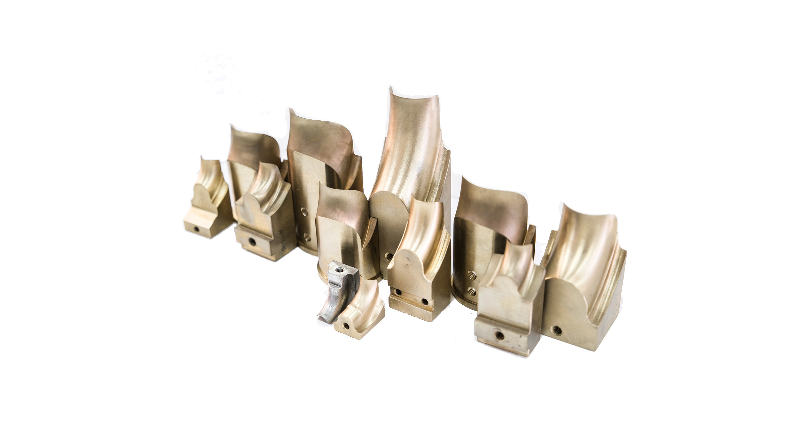
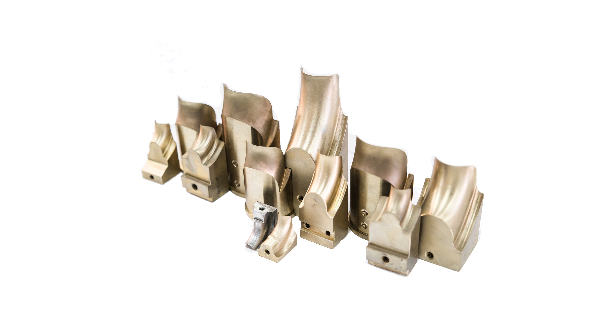

ÇALIŞTIĞIMIZ SEKTÖRLER
- Otomotiv
- Makina
- Demir-Çelik
- Savunma Sanayi
- Havacılık
- Petro Kimya
- Medikal
- Gıda
- Demiryolu
- Ambalaj
- Denizcilik
- Beyaz Eşya-Elektronik


 


Teknik doğruluk, yüksek hassasiyet ve üstün kalite ile teknik resme göre işlenmiş, hazır ürün olarak hizmet vermekteyiz.
Doğru malzeme seçimi konusunda teknik uzmanlığımızla müşterilerimize destek vererek, projelerinde en uygun ve verimli çözümleri sunmaktayız.
1 Kg bakır hurdanın geri dönüştürülmesi, yeni bakır üretimine göre yaklaşık 4-5 Kg karbon salınımını engellemektedir. Daha temiz bir çevre için bakır-bronz hurdalarınızı alıyoruz.
Adres: Üçevler Mah. Ersan Sok. İbrahim Yazıcı Plaza 2 No:8 A Nilüfer/Bursa
Telefon: 0538 882 80 78
Email: ozgur.inan@devinmetal.com